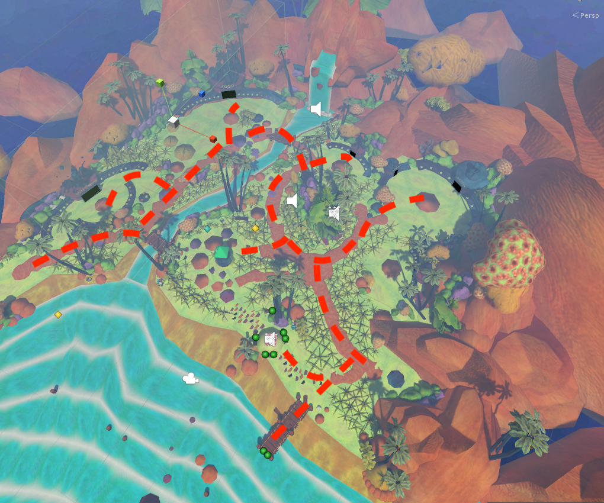
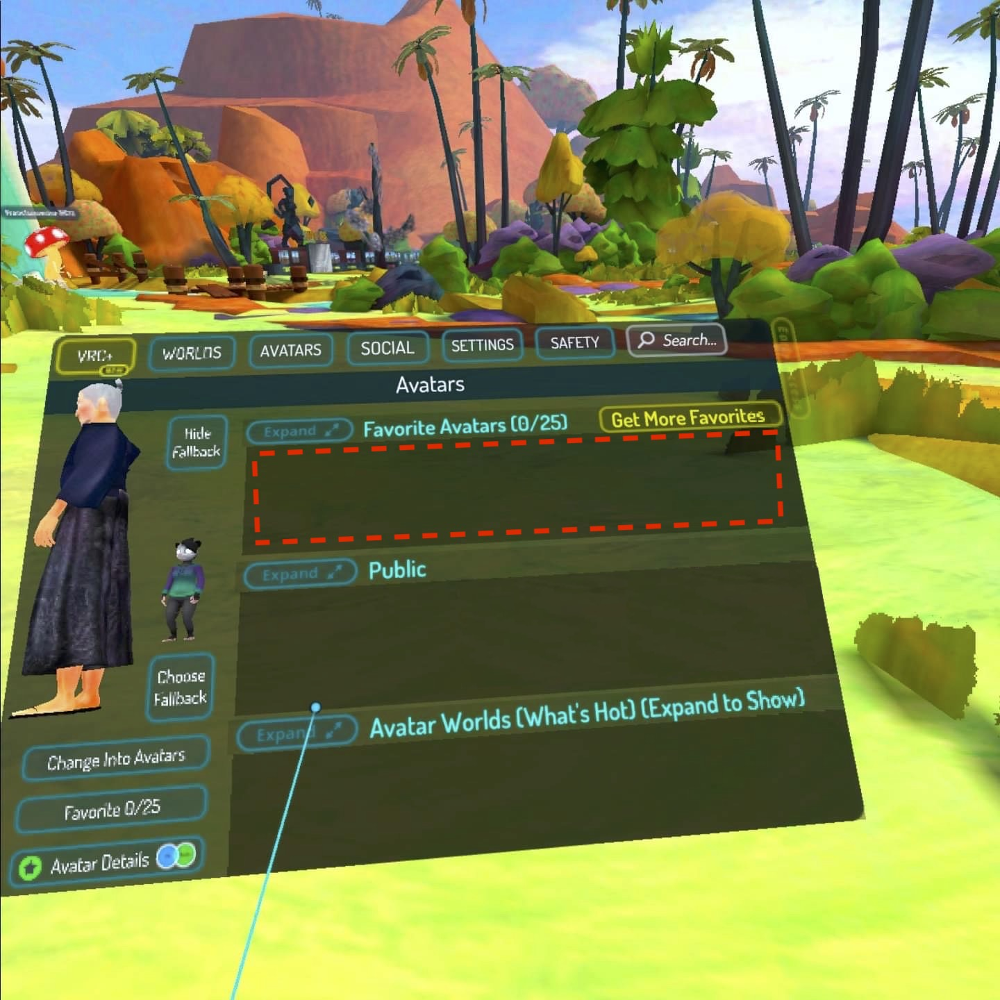
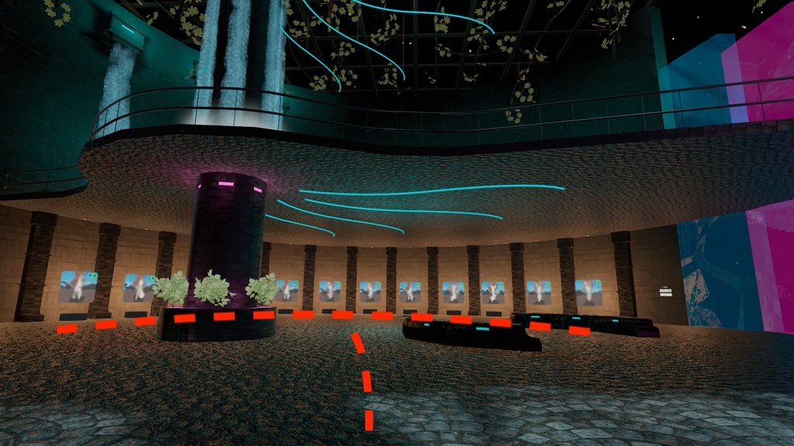
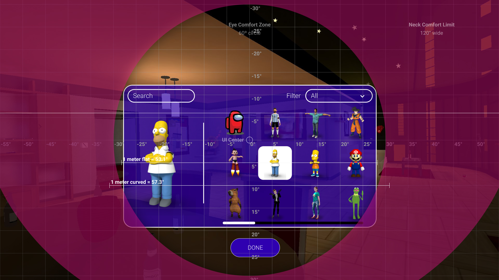
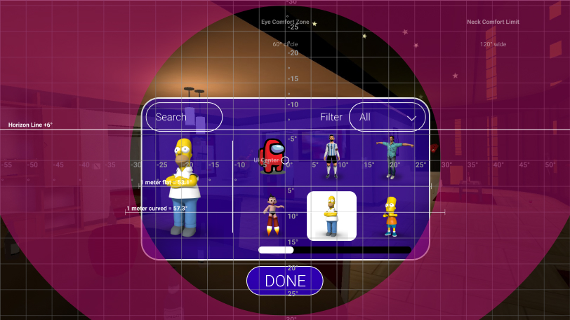

On the Oculus Quest 2 there's a game called VR-Chat, an online virtual world platform that allows users to interact with others with user-created 3D character models (aka Avatars) and worlds.
Current Experience
A problem I found with this game, which you will see below, is the experience of selecting an avatar. The issue is that upon creating an account, the first thing user is given the option to explore are these "Avatar Worlds", which are game maps containing various player models for you to choose from.
While at first this seems like a great way to introduce players to the game, I actually found it quite tedious, as you must endure walking through a large map of player models in a line to browse your options. It took me roughly 15 minutes to tour the entire map, and being a task and not the focus of the game itself, the experience of browsing by walking, turning, and rotating in a VR environment becomes nauseating for less-experienced players like myself.
Here's an aerial view of an avatar map, the red dashed lines represent the paths the user must take to see all of the avatars.
What the game DOES have is a menu for changing to your favorited avatars, however, no all-encompassing gallery.
And here's an example of another Avatar World.
Updated Experience
Full Size: WebGL / Oculus VR (1920x1080)
The aim of this interface is to make changing avatars a quicker experience that isn't so physically straining on less experienced VR users.
In my design, users could access the avatar changer from their user settings window. You would be able to search by name, as well as filter by category. Users can swipe through a 4x3 grid.
Mockup guide setting:
Mobile Size: Google Cardboard (812x457)
In the mobile screen size, the avatar browser would shrink to a 3x2 grid.
Mockup guide setting: